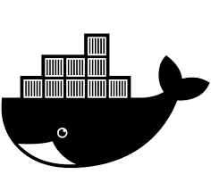
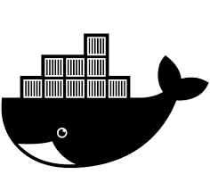

Tom Longson
Senior Front-end Developer
Tl;dr
- Worked for giants of media Hulu, Sony, and Walt Disney
- Raised capital from 500 Startups as a Founder of GogoCoin
- Most recently used ReactJS / Django at FinTech Startup, SelfScore to failicate their MasterCard for International Student product
- Led Front-end Dev for Wells Fargo's most profitable B2B Product
Skills
10+ years
A decade developing rich application experiences with JavaScript frameworks such as ReactJS, AngularJS, Backbone, and YUI.

Beyond Front-end
Tom has built production build systems, led backend development and operations, and has extensive experience in FinTech and e-Commerce.

 

Mission Critical XP
Tom is a self-starter, having led a 500 startups company and as well as worked on high-value products for Sony and Wells Fargo.


Technical
Client Side
- JavaScript
- ReactJS
- AngularJS
- Backbone
- CSS3 / SCSS
- Box2d
- jQuery
- YUI
Server Side
- NodeJS
- Python
- Django
- Mezzazine
- Ruby
- Postgres
- MongoDB
Infrastructure
- AWS
- Docker
- Vagrant
- Jenkins
- Grunt + Gulp
Experience
2015-2016
SelfScore
Senior Front-end Developer
Developed a Credit Card Dashboard using React and SCSS for the frontend, and Django / Python REST APIs for the backend. Designed and built underwriting pipeline for user from being pre-qualified through approved.
- Developed ReactJS Customer Dashboard
- Created CRM for underwriting process with Django
- Built DevOps Continuous Deployment with AWS Elastic Beanstalk, Docker, and Jenkins
- Added support for oAuth with Facebook, Twitter, LinkedIn
- Developed "Magic Link" one time password emails
- Integrated "Know Your Customer" checks with Jumio, Blockscore, and the National Student Clearinghouse
- Created persona based end-to-end functional tests with Selenium and Webdriver using Node.js
- Developed Prototype iOS App for tracking customers for fraud prevention
2013-2015
GogoCoin
CEO
Founded and developed Bitcoin Gift Card product from concept to market. Included a fully functional client built on top of
- 500 Startups, Batch 9
- Featured at LAUNCH Fest
- Highlighted by TechCrunch
- Used NodeJS, Python, Postgres, and Vagarant
- Produced 10k+ gift cards for promotional and retail sale
- Partnered with Blockchain and Bitcoin.com
2011-2013
Sony
Senior Front-end Developer
Developed the Sony Playstation Store, which like iTunes, allows for anyone to purchase movies, video games, and more.
- Developed Internationalization support for 30+ languages
- Developed with BackboneJS
- Designed and developed SEO service with PhantomJS and NodeJS for all regions and languages
2011-2011
Singly
UX Designer + Developer
Designed and did analysis on multiple projects related building the Singly hosted platform for The Locker Project (http://lockerproject.org/). Did development on an interactive guided setup, a merged contacts viewer, an intesting links collection, and a photo collection viewer.
2008-2010
Burning Man Earth
Front-end Web Developer
Developed new system for adding, tracking, and searching events, art, theme camps, and people for the Burning Man art festival in Reno, Nevada.
2009-2010
Wells Fargo
Senior Front-end Web Developer
Developing applications and sales tools for commercial credit tools for the Comercial Services branch of Wells Fargo.
- Heavy use of JavaScript/YUI.
- Built custom purely JavaScript MVC framework.
2008-2009
Stop The Spin
Lead Developer / CTO
Led development on political awareness and action site. Stop the Spin was an experimental project aimed at allowing better understanding of "wicked problems", such as healthcare, abortion, global warming, etc. Used decision trees in order to allow people to explore complex issues, allowing them to arrive at a position based on logical conclusions.
- Utilized Python, Pylons, SQLAlchemy, Mako, JavaScript, jQuery, and Processing, using a MySQL backend.
- Oversaw a team of writers to create decision tree content.
2007 - 2008
Cars.com
Manager for Research & Development at Cars.com
Promoted to head of department. Built and led a team of three developers to pursue potential new interfaces for Cars.com & NewCars.com. Responsible for executing products from concept to frutition. Projects included (but not limited to) advanced tools to allow consumers better ways to find and compare cars, internal tools to visualize sales data geographically, consumer dealer locator tools, car search widgets, and a new car photo compare.
- Utilized PHP, JavaScript, and Adobe Flex, using MySQL databases of Make/Model data and Dealership data.
2006 - 2007
Cars.com
Lead Technical Developer for Research & Development at Cars.com
Designed and developed a variety of prototype user friendly applications for Cars.com and NewCars.com.
- Led development for department.
- Utilized PHP, Ruby, and JavaScript, using MySQL databases of Make/Model data.
2005-2006
Disney
Front-end Web Developer
Designed and implemented a central repository for all television animation staff and potential candidates. System included features to allow management to review and rate all artists, maintain in depth history of creative talent, and preserve a digital archive of portfolios for reprinting and reviewing online.
- Led front-end development and co-developed PHP backend.
- Initiated adoption of Web 2.0 style UI practices.
- Utilized PHP, JavaScript, and XSLT, using a MySQL database.
Distinctions
2015
Joined 500 Startups
Founded a company, GogoCoin, with investment and mentorship from Dave McClure and Sean Percival.
2015
Presented at Draper University
Interviewed Tim Draper for Hero City and Draper University in San Mateo.
2014
Speaker / Singularity University
Interviewed by Salim Ismail for Singularity University at NASA Ames.
2014
Speaker / LAUNCH FEST
Invited to speak at LAUNCH FEST by Jason Calcanis and hosted a booth in Startup Alley at the Concorse Center.
2014
This Week In Startups
Guest speaker on This Week In Startups with Jason Calcanis.
2014
Presented at DorkBot SF
Did a presentation on the Bitcoin network at San Francisco's DorkBot.
2010
Where 2.0
Invited to demo the OpenView Project's Streetview Tricycle as part of the Where Fair.
2006
O'Reilly Google Maps Hacks
Authored sections on defining custom map markers in Google Maps and creating mapped slideshows of one's travels.
2005
O'Reilly Mapping Hacks
Authored section on georefrencing images with EXIF metadata.